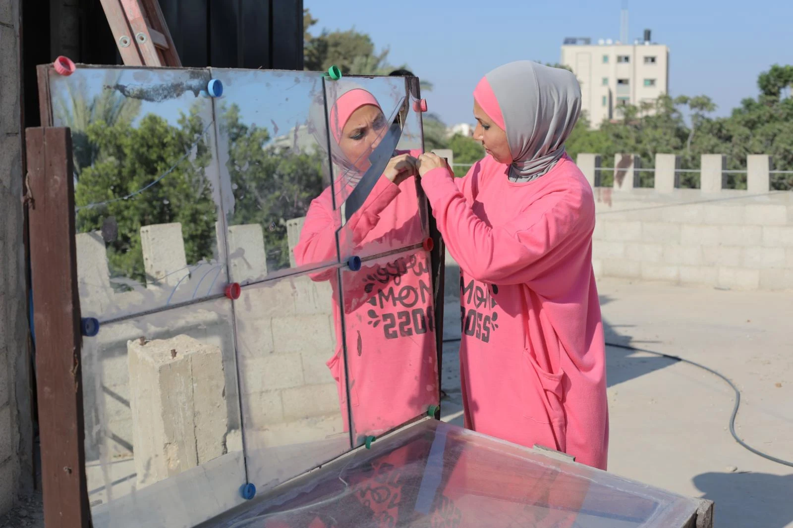
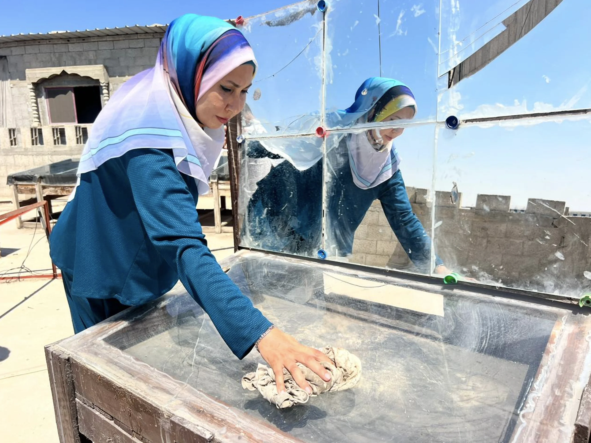
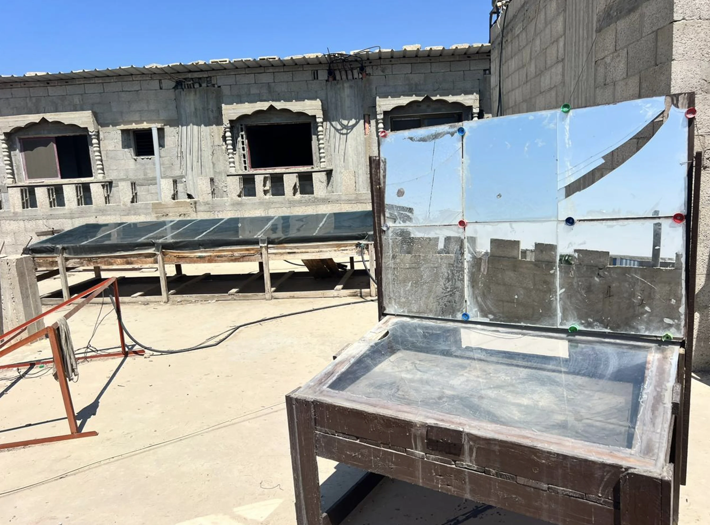

Sin humo
Evita la combustión directa durante la preparación de alimentos.

PGC · Energía para la vida cotidiana
Una alternativa para preparar alimentos con la luz del sol, reducir la necesidad de combustibles y facilitar las tareas cotidianas de las familias.
Una respuesta práctica
La cocina solar ofrece una alternativa para preparar alimentos aprovechando la luz del sol.
El proyecto busca reducir la necesidad de combustibles y facilitar las tareas cotidianas de las familias. Su diseño concentra la energía solar en un espacio protegido donde los alimentos pueden recibir calor sin recurrir al fuego.
Así, una fuente disponible y renovable se convierte en una herramienta útil para la vida diaria.

Cómo funciona
Los paneles reflectantes aprovechan la luz directa, concentran el calor y crean un entorno adecuado para preparar alimentos.

La cocina se ubica donde pueda recibir luz solar directa.
Las superficies reflectantes dirigen la energía hacia el interior.
El calor acumulado permite cocinar sin combustión ni conexión eléctrica.
El proyecto en terreno
Enas presenta el dispositivo, explica su construcción y muestra cómo la energía solar puede apoyar la preparación cotidiana de alimentos.
Beneficios
La cocina solar aprovecha un recurso disponible para reducir la dependencia de combustibles y mejorar la experiencia de cocinar.
Evita la combustión directa durante la preparación de alimentos.
Funciona utilizando la luz solar disponible.
Reduce la necesidad de madera, gas u otras fuentes para cocinar.
Aporta una alternativa práctica para las tareas cotidianas.
Innovación con propósito
PGC transforma una fuente renovable en una herramienta concreta para cocinar con mayor autonomía y menor dependencia de combustibles.